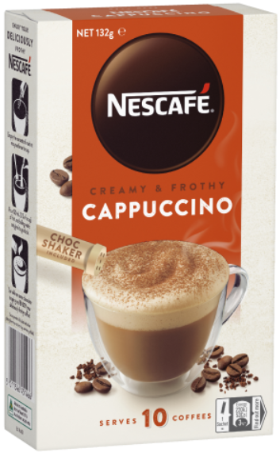
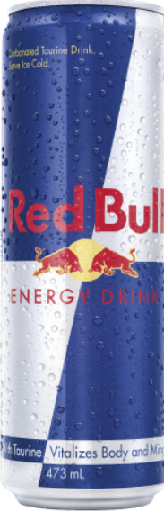
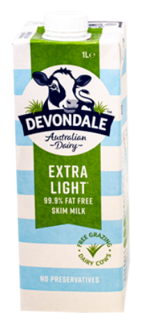
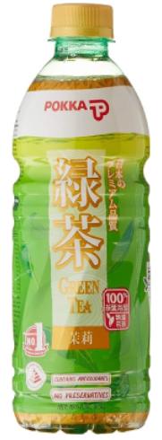

| Pure Spring Sparkling Water |
330 ml |
A refreshing carbonated water that provides instant hydration. It has a crisp and clean taste with no added sugar or calories. Perfect for those who enjoy a light and fizzy drink. |
|

|
| Lipton Peach Flavor Iced Tea |
500 ml |
A sweet and refreshing iced tea with a natural peach flavor. It offers a smooth blend of tea and fruit taste that cools and satisfies. Great for a relaxing drink on a hot day. |
- Water
- Sugar
- Tea extract
- Citric acid
- Peach flavoring
|

|
| Oak Chocolate Drink |
600 ml |
A rich and creamy chocolate-flavored milk drink that satisfies sweet cravings. It has a thick and smooth texture, making it enjoyable to drink. Best served cold for a refreshing experience. |
- Full cream milk
- Sugar
- Cocoa
- Stabilizers
|

|
| Nescafé Cappuccino |
240 ml |
A smooth and creamy ready-to-drink coffee with a balanced cappuccino taste. It provides a rich coffee flavor with a touch of milk for smoothness. Perfect for coffee lovers who want an easy and quick energy boost. |
|

|
| Red Bull Energy Drink |
473 ml |
A high-energy drink designed to boost focus and alertness. It contains caffeine and essential vitamins to help keep you active. Ideal for those who need extra energy for work, study, or sports. |
- Water
- Sucrose
- Glucose
- Caffeine
- Taurine
- B vitamins
|

|
| Noodie Apple Fruit Juice |
400 ml |
A refreshing apple juice made from real fruit with no preservatives. It has a natural sweetness and a smooth, fruity taste. Great for a quick and healthy drink anytime. |
- Apple juice concentrate
- Vitamin C
|

|
| Devondale Milk |
1000 ml |
A full-cream milk that is rich, smooth, and nutritious. It can be enjoyed on its own, with cereal, or used for cooking. Sourced from high-quality dairy farms to ensure freshness. |
|

|
| Coca Cola Zero |
1.25 ml |
A sugar-free version of the classic Coca-Cola with the same great taste. It has zero calories, making it a lighter option for soda lovers. Perfect for those who enjoy soft drinks without the extra sugar. |
- Carbonated water
- Caramel color
- Phosporic acid
- Artificial sweeteners
- Caffeine
|

|
| Gatorade |
500 ml |
A sports drink designed to help rehydrate and replenish lost fluids. It contains electrolytes that keep you energized during workouts and physical activities. Ideal for athletes and active individuals who need hydration support. |
- Water
- Sugar
- Electrolytes
- Natural flavors
|

|
| Pokka Green Tea |
500 ml |
A refreshing green tea made from real brewed tea leaves. It has a light and smooth taste with no artificial flavors or preservatives. A great drink choice for tea lovers looking for a natural and healthy option. |
- Green Tea Extract
- Water
- Vitamin C
|

|